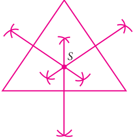
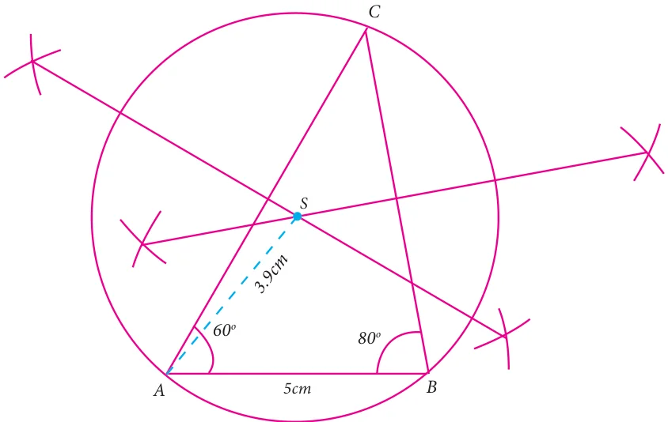
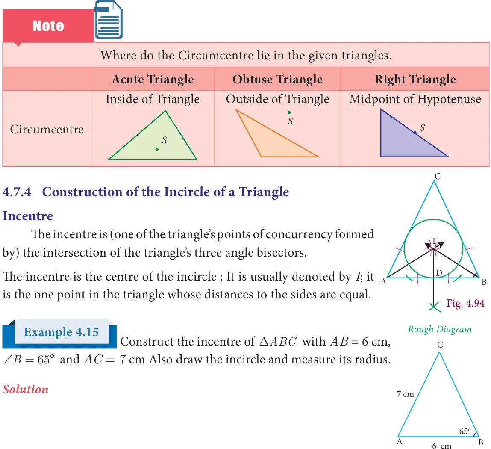

<!DOCTYPE html>
<html lang="en">
<head>
<meta charset="UTF-8">
<meta name="viewport" content="width=device-width,initial-scale=1">
<title>4.7.3 Construction of the Circumcentre of a Triangle — Geometry</title>
<meta name="description" content="Class 9 Mathematics · Geometry · 4.7.3 Construction of the Circumcentre of a Triangle">
<link rel="icon" href="data:image/svg+xml,<svg xmlns='http://www.w3.org/2000/svg' viewBox='0 0 100 100'><text y='.9em' font-size='90'>📘</text></svg>">
<link rel="stylesheet" href="../../../assets/book.css">
<link rel="stylesheet" href="https://cdn.jsdelivr.net/npm/katex@0.16.11/dist/katex.min.css" crossorigin="anonymous">
</head>
<body>
<header class="topbar">
<div class="topbar-in">
  <div class="crumb">
    <span class="c1"><a href="../../../index.html">Library</a> · <a href="../../index.html">Class 9 Mathematics</a></span>
    <span class="c2">Geometry · 4.7.3 Construction of the Circumcentre of a Triangle</span>
  </div>
  <a class="tb-btn" data-nav="prev" href="../../04-geometry/12-exercise-4.5/index.html" title="Exercise 4.5">←</a>
  <details class="drawer"><summary class="tb-btn" title="Sections in this chapter">☰</summary>
<div class="drawer-panel"><div class="dh">Geometry</div><a href="../01-chapter-opener/index.html">Chapter opener; 4.1 Introduction</a><a href="../02-types-of-angles-recall-4.2/index.html">4.2 Types of Angles-Recall</a><a href="../03-exercise-4.1/index.html">Exercise 4.1</a><a href="../04-quadrilaterals-4.3/index.html">4.3 Quadrilaterals</a><a href="../05-exercise-4.2/index.html">Exercise 4.2</a><a href="../06-parts-of-a-circle-4.4/index.html">4.4 Parts of a Circle</a><a href="../07-properties-of-chords-of-a-circle-4.5/index.html">4.5 Properties of Chords of a Circle</a><a href="../08-exercise-4.3/index.html">Exercise 4.3</a><a href="../09-cyclic-quadrilaterals-4.6/index.html">4.6 Cyclic Quadrilaterals</a><a href="../10-exercise-4.4/index.html">Exercise 4.4</a><a href="../11-practical-geometry-4.7/index.html">4.7 Practical Geometry</a><a href="../12-exercise-4.5/index.html">Exercise 4.5</a><a href="../13-construction-of-the-circumcentre-of-a-triangle-4.7.3/index.html" aria-current="page">4.7.3 Construction of the Circumcentre of a Triangle</a><a href="../14-exercise-4.6/index.html">Exercise 4.6</a><a href="../15-exercise-4.7/index.html">Exercise 4.7</a><a href="../16-summary/index.html">Points to Remember</a><a href="../17-ict-corner/index.html">ICT Corner-1</a></div></details>
  <a class="tb-btn" data-nav="next" href="../../04-geometry/14-exercise-4.6/index.html" title="Exercise 4.6">→</a>
  <button class="tb-btn" data-theme-toggle title="Toggle light / dark" aria-label="Toggle light or dark theme">◐</button>
</div>
<div class="progress"><span style="width:54.2%"></span></div>
</header>
<main class="wrap">
<div class="sec-head">
  <p class="eyebrow"><a href="../index.html">Chapter 4 · Geometry</a></p>
  <h1>4.7.3 Construction of the Circumcentre of a Triangle</h1>
  <p class="sec-meta">Textbook pages 40–43 · 15 figures</p>
</div>
<article class="prose">
<figure class="fig side-fig"><figcaption>Fig. 4.90</figcaption></figure>
<p>The Circumcentre is the point of concurrency of the Perpendicular bisectors of the sides of a triangle. It is usually denoted by S.</p>
<h3 id="s-circumcircle">Circumcircle</h3>
<p>The circle passing through all the three vertices of the triangle with circumcentre (S) as centre is called circumcircle.</p>
<h3 id="s-circumradius">Circumradius</h3>
<aside class="sidenote"><p>Circumcircle</p></aside>
<figure class="fig side-fig"></figure>
<p>The line segment from any vertex of a triangle to</p>
<aside class="sidenote"><p>Circumcentre</p></aside>
<p>the Circumcentre (S) of a given triangle is called circumradius of the circumcircle. Circumradius</p>
<figure class="fig"></figure>
<p>Objective To construct a perpendicular bisector of a line segment using paper folding. Fig. 4.91</p>
<p>Procedure Make a line segment on a paper by folding it and name it as PQ. Fold PQ in such a way that P falls on Q and thereby creating a crease RS. This line RS is the perpendicular bisector of PQ.</p>
<figure class="fig"></figure>
<h3 class="callout-h" id="s-activity-12">Activity 12</h3>
<p>Objective To locate the circumcentre of a triangle using paper folding.</p>
<p>Procedure Using Activity 12, find the perpendicular bisectors for any two sides of the given triangle. The meeting point of these is the circumcentre of the given triangle.</p>
<figure class="fig side-fig"></figure>
<figure class="fig"></figure>
<p>Construct the circumcentre of the ΔABC with \(AB = 5\) cm, \(+A = 60^{0}and +B = 80^{0}\). Also draw the circumcircle and find the circumradius of the</p>
<p>ΔABC. Rough Diagram</p>
<h4 class="callout-h" id="s-solution">Solution</h4>
<p>Step 1 Draw the ΔABC with the given measurements</p>
<figure class="fig side-fig"></figure>
<h4 class="callout-h" id="s-step-2">Step 2</h4>
<p>Construct the perpendicular bisector of any two sides (AC and BC) and let them meet at S which is the circumcentre.</p>
<h4 class="callout-h" id="s-step-3">Step 3</h4>
<p>S as centre and \(SA = SB = SC\) as radius,</p>
<p>draw the Circumcircle to passes through A,B and C.</p>
<div class="mathblock"><p>Circumradius \(= 3.9\) cm.</p></div>
<p class="caption">Fig. 4.92</p>
<figure class="fig"><figcaption>Fig. 4.93</figcaption></figure>
<figure class="fig table-fig wide"></figure>
<p>Step 1 : Draw the DABC with \(AB = 6cm\), \(\angle = ^{\circ}\) and</p>
<figure class="fig"><figcaption>Fig. 4.95 at .</figcaption></figure>
<div class="mathblock"><p>\(= 7cm\)</p></div>
<figure class="fig side-fig"></figure>
<p>Step 2 : Construct the angle bisectors of any two angles (A and B) and let them meet at I. Then I is the incentre of DABC. Draw perpendicular from I to any one of the side (AB) to meet</p>
<figure class="fig"></figure>
<p>Step 3: With I as centre and ID as radius draw the circle. This circle touches all the sides of the triangle internally.</p>
<p>Step 4: Measure inradius</p>
<div class="mathblock"><p>In radius \(= 1.9\) cm.</p></div>
<figure class="fig"></figure>
<p>1 Draw a triangle ABC, where \(AB = 8\) cm, \(BC = 6\) cm and \(+B = 70^{0}\) and locate its circumcentre and draw the circumcircle. 2 Construct the right triangle PQR whose perpendicular sides are 4.5 cm and 6 cm. Also locate its circumcentre and draw the circumcircle.</p>
<ul class="qlist">
<li><span class="mk">3.</span><span class="lt">Construct ΔABC with \(AB = 5\) cm \(+B = 100^{0}and BC = 6\) cm. Also locate its circumcentre</span></li>
</ul>
<p>draw circumcircle.</p>
<ul class="qlist">
<li><span class="mk">4.</span><span class="lt">Construct an isosceles triangle PQR where \(PQ= PR\) and \(+Q = 50^{0}\), \(QR = 7cm\). Also</span></li>
</ul>
<p>draw its circumcircle.</p>
<ul class="qlist">
<li><span class="mk">5.</span><span class="lt">Draw an equilateral triangle of side 6.5 cm and locate its incentre. Also draw the</span></li>
</ul>
<p>incircle.</p>
</article>
<nav class="pager"><a class="" data-nav="prev" href="../../04-geometry/12-exercise-4.5/index.html"><span class="dir">← Previous</span><span class="t">Exercise 4.5</span><span class="ch">Geometry</span></a><a class="nx" data-nav="next" href="../../04-geometry/14-exercise-4.6/index.html"><span class="dir">Next →</span><span class="t">Exercise 4.6</span><span class="ch">Geometry</span></a></nav>
</main><footer class="site">Generated from the source textbook PDFs · text, figures and exercises belong to their respective publishers.</footer><script defer src="https://cdn.jsdelivr.net/npm/katex@0.16.11/dist/katex.min.js" crossorigin="anonymous"></script>
<script defer src="https://cdn.jsdelivr.net/npm/katex@0.16.11/dist/contrib/auto-render.min.js" crossorigin="anonymous"
  onload="renderMathInElement(document.body,{delimiters:[
    {left:'\\(',right:'\\)',display:false},
    {left:'$$',right:'$$',display:true},
    {left:'\\[',right:'\\]',display:true}],throwOnError:false,ignoredTags:['script','noscript','style','textarea','pre','code']})"></script>
<script src="../../../assets/book.js"></script>
</body>
</html>
